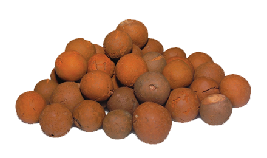
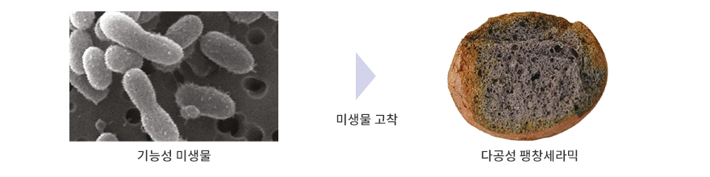
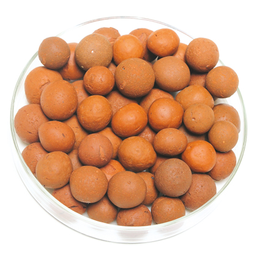
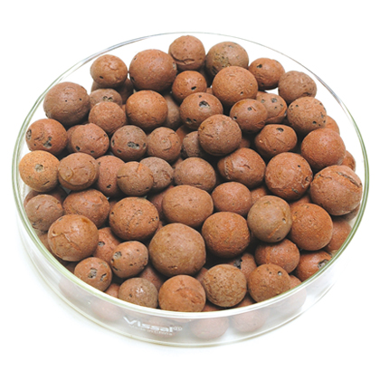
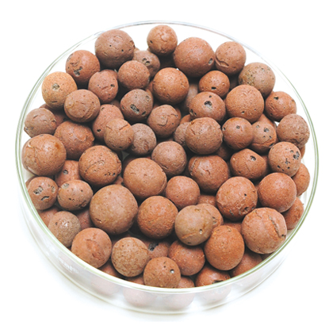
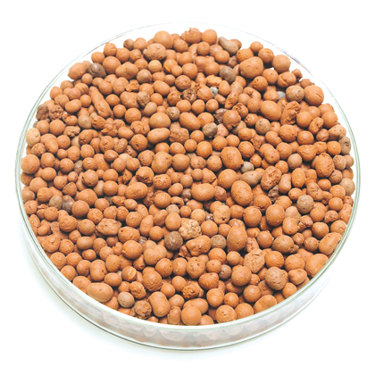
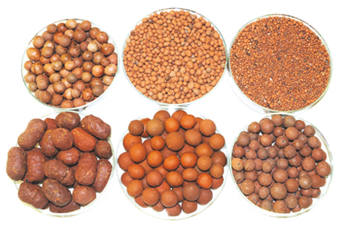
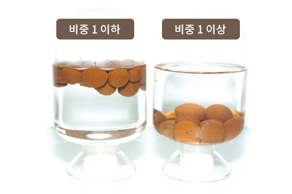
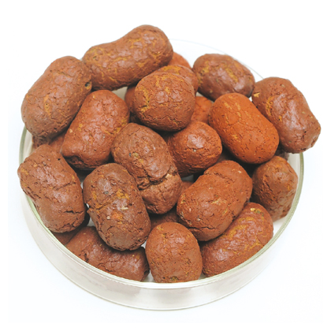
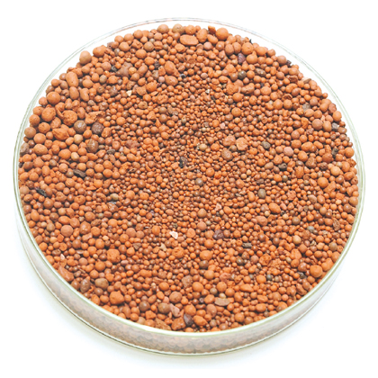

소재분야
기능성 미생물 고착, 다공성팽창세라믹 담체
개요
천연유기질을 무기성광물과 균일하게 배합하여 1150~1200℃에서 소성 팽창되어진 다공성 소재로 물리적·화학적 특성이 매우 우수한 세라믹 담체입니다.

특징
- 혈암, 황토, 천연유기질을 주재료로 이용
- 금속이온에 의한 인(T-P)제거 능력 탁월
- 내부의 크고 작은 공극에 의한 질산화 및 탈질 반응
- 유기물, 영양염류, 중금속 물질 등의 흡착/산화 반응
- 악취유발물질의 제어를 통한 악취 저감
- 수생식물의 식생기반재로 이용
물리적 특성
| 입경 범위 | Ø13~25㎜, Ø1~15㎜ | 주원료 | 황토, 점토, 혈암 |
|---|---|---|---|
| 외관 | 구형, 홍갈색, 거칠고 미세한 기공 | 실적 중량 | 0.9~1.4g/㎤ |
| 용적 중량 | 0.75~0.95g/㎤ | 파쇄율 | ≦10% |
| 공극율 | ＞31% | 비교면적 | 1.8~5×104㎠/g |
| 염산가용율 | ＜1.5% | 마찰손실율 | ＜8.0% |
| 압축강도 | 2~3Mpa | 불균등계수 | ＜1.25 |
화학적 특성
| SiO₂ | Al₂O₃ | Fe₂O₃ | CaO | MgO | K₂O+Na₂O | 기타 |
|---|---|---|---|---|---|---|
| 62.12% | 16.32% | 7.84% | 3.26% | 2.04% | 3.22% | 6.42% |
내부구조

미세 다공성 구조 : 미생물 서식 공간 제공 / 유기물 및 질소 제거 / 인 흡착
종류
M-PEC1 수질정화습지·물재이용

| 특징 |
|
|---|---|
| 용도 | 고효율 수질정화습지, 물재 이용 |
| 특허 | 특허 제1065814호 |
| 입경 | Ø15~25㎜ |
M-PEC2 폐유 및 유기물 제거용

| 특징 |
|
|---|---|
| 용도 | 도시 비점오염원의 엔진오일, 폐유 및 유기물 제거 |
| 특허 | 특허 제0866526호 |
| 입경 | Ø15~25㎜ |
M-PEC3 악취제거용

| 특징 |
|
|---|---|
| 용도 | 하수, 맨홀, 우수받이 축산폐수 악취 제거용 |
| 특허 | 특허 제1173260호 |
| 입경 | Ø15~25㎜ |
M-PEC4 병원성균 및 대장균군 제어

| 특징 |
|
|---|---|
| 용도 |
|
| 특허 | 특허 제1065814호 |
| 입경 | Ø15~25㎜ |
적용 사례
기능성 미생물 고착, 다공성팽창세라믹


다양한 밀도의 팽창세라믹
특징
- 무기성광물과 천연유기질을 균일하게 배합하여 1150~1200℃에서 소성팽창되어진 다공성 세라믹 소재에 미생물을 고착시킨 고기능성 미생물 담체
- 내부의 나노기공에 의한 미생물의 서식처 제공
- 유기물 및 영양염류 물질의 흡착 후 미생물에 의한 분해
종류
PEC1 인공습지·침출수처리용

| 특징 |
|
|---|---|
| 용도 |
|
| 특허 | 특허 제0567422호 |
| 입경 | Ø15~25㎜ |
PEC2 옥상녹화용 식생 기반재·빗물재 이용 여과용 여재

| 특징 |
|
|---|---|
| 용도 | 옥상 녹화, 원예용 인공토양, 실내 녹화 |
| 특허 | 특허 제1173260호 |
| 입경 | Ø5㎜ 이하 |